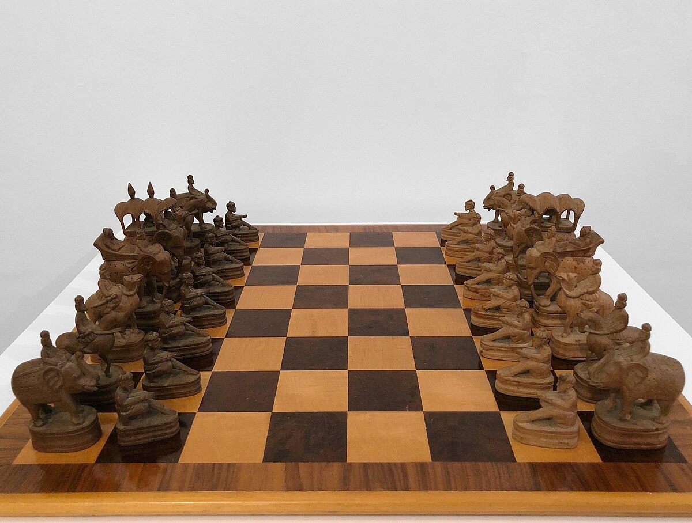
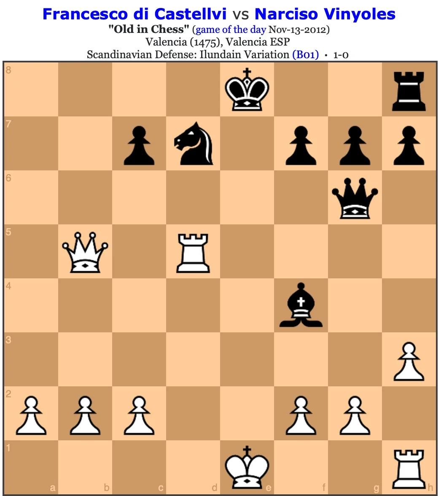
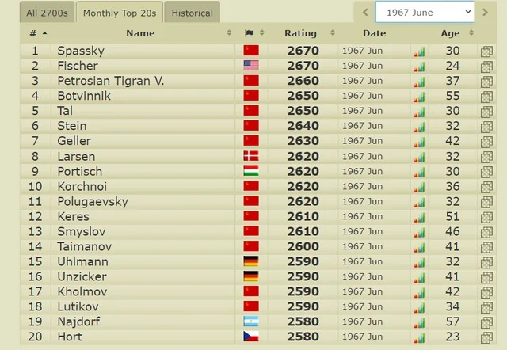
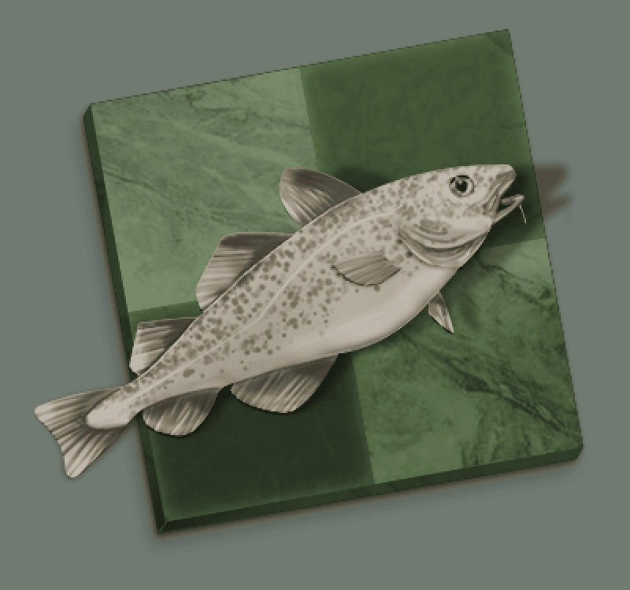

Introduction
Chess is a strategy game played by two players. It is one of the world's most popular and oldest board games, combining elements of art, science, and sport. It is played on a checkered board with 64 squares arranged in an 8 × 8 grid.
The goal of the game
Each player starts with 16 pieces: a king, a queen, two rooks, two bishops, two knights, and eight pawns. Each type of piece moves in its own way. The ultimate goal is to checkmate the opponent's king: meaning the king is under attack and has no legal way to escape.
A short history of chess
The origins of the game:
Chess is generally traced back to chaturanga, a game played in India around the sixth century. It used a board similar to today's chessboard and pieces that influenced the modern game. The game later reached Persia, where it became known as shatranj. From there, it spread through the Arab world and eventually reached Europe through Spain and Italy.

The development of modern chess:
Around 1475, chess changed considerably. The queen gained its modern power, the bishop became more mobile, and games became faster. In the sixteenth century, players such as Ruy López wrote about openings and chess strategy. London hosted a major international tournament in 1851. In 1886, Wilhelm Steinitz became the first official world chess champion.

The era of world champions:
Between 1886 and 1946, champions such as Steinitz, Lasker, Capablanca, Alekhine, and Euwe helped shape professional chess. Botvinnik became world champion in 1948, beginning a long period of Soviet success. In 1972, Bobby Fischer defeated Boris Spassky in the “Match of the Century”. Kasparov defeated Karpov in 1985, Kramnik defeated Kasparov in 2000, and Magnus Carlsen became world champion in 2013. Computer analysis had become an important part of preparing for these matches.

Technology and chess:
In 1950, Claude Shannon published a study on programming a computer to play chess. In 1997, IBM's Deep Blue defeated world champion Garry Kasparov in a match. Chess engines became more widely available during the following decade and changed how players studied the game. In 2017, AlphaZero learned chess through self-play and defeated a traditional chess engine. Today, engines such as Stockfish are common tools for analysing games and preparing for tournaments.
